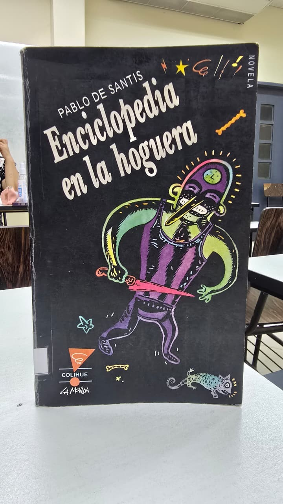

Análisis del libro

Enciclopedia en la hoguera
La historia gira en torno a un misterio urbano lleno de secretos, libros raros y personajes bastante extraños. El protagonista es un chico común que de la noche a la mañana se termina metiendo en una aventura peligrosa.
📖 Capítulo 1: Introducción a la Materia
Aquí podés redactar el resumen de los conceptos iniciales que aborda el primer bloque del libro. Explicá las tesis principales del autor de manera fluida y concisa.
- Punto clave 1: Concepto relevante analizado en la lectura.
- Punto clave 2: Segunda idea o debate propuesto por el autor.
- Punto clave 3: Conclusión parcial de este capítulo.
📖 Capítulo 2: El Núcleo del Análisis
Espacio reservado para el nudo del libro. Añadí la información sobre las metodologías, las problemáticas centrales planteadas y las soluciones teóricas que ofrece la obra.
- Punto clave 1: Argumento fuerte del autor sobre el sistema.
- Punto clave 2: Evidencias, ejemplos o casos prácticos mencionados.
📖 Capítulo 3: Conclusiones y Futuro
Escribí el desenlace o las proyecciones finales que el libro propone de cara a las tecnologías y el aprendizaje profesional continuo.
El libro trata sobre una novela de misterio rápida y entretenida que nos enseñó sobre el valor de los libros, de los conocimientos, la lectura, la memoria y la busqueda de la verdad, y del peligro de que el conocimiento sea destruido y manipulado, lo cual como grupo nos gustó mucho porque nos enseña el valor de todo eso en un caso hipotetico muy entretenida e interesante y, sobre todo, atrapadora.